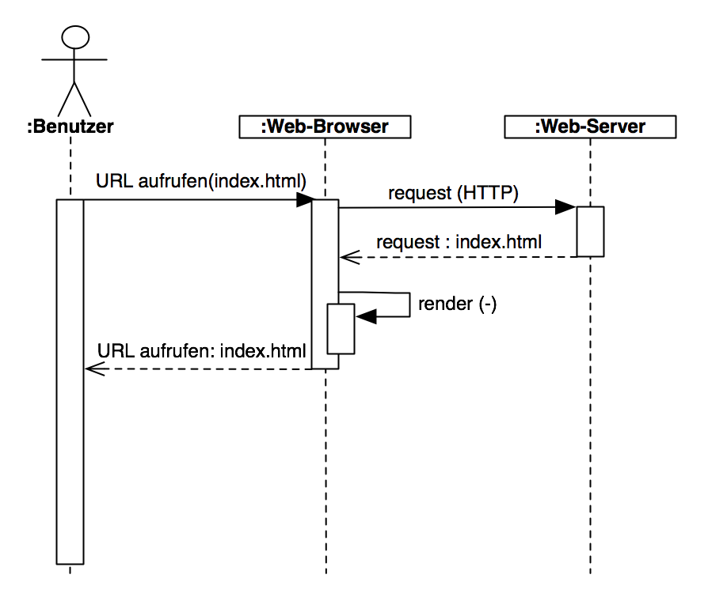
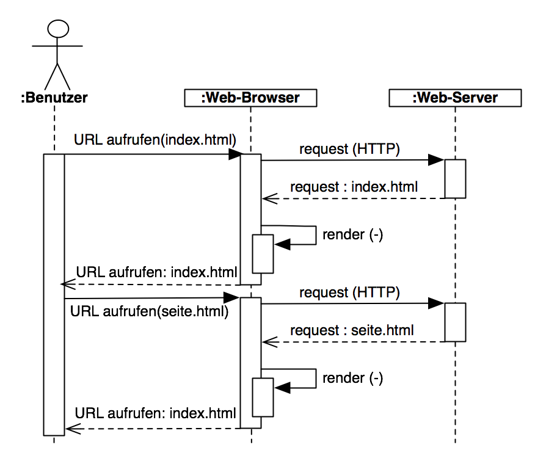
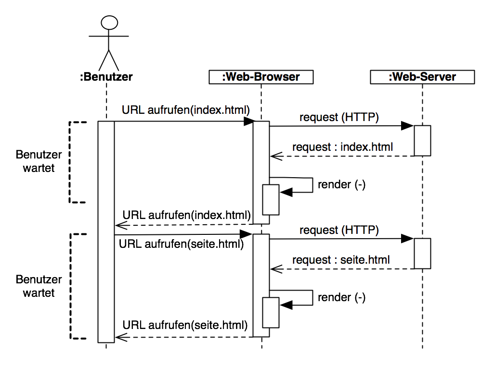
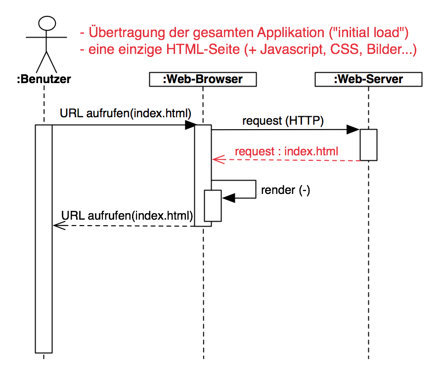
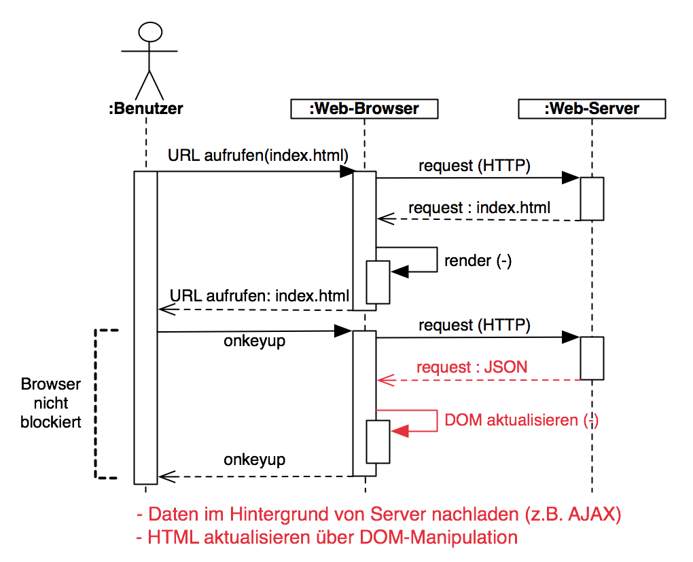
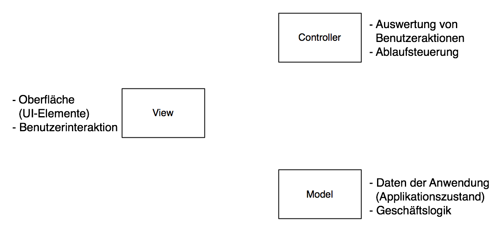
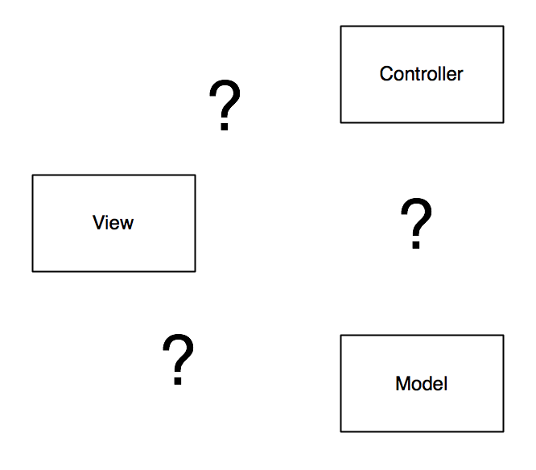
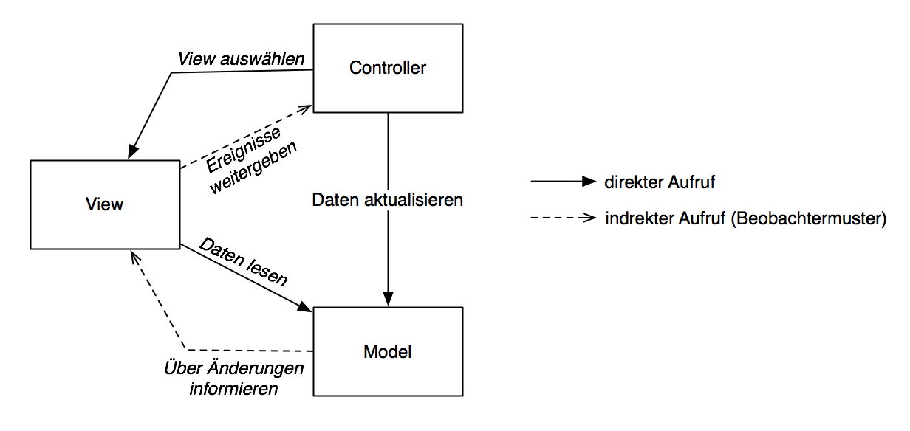

Dr. Sven Jörges
"SPA?"
“An SPA is an application delivered to the browser that doesn't reload the page during use.” M. Mikowski, J. Powell: Single Page Web Applications
→ im Folgenden: "Multi Page Applications (MPA)"





Entstehende Komplexität beherrschen!
(Wartbarkeit, Anpassbarkeit, etc.)
→ Architekturmuster



z.B.: Ember, Backbone, Angular, React, Knockout, Meteor, Elm, Vue...
Folien: https://elsvene.github.io/spa-architecture-lecture
MVC-Beispiel: https://github.com/elsvene/minimal-todo-js-mvc
M. Mikowski, J. Powell. Single Page Web Applications: JavaScript end-to-end, Manning, 2013
H. Spindler. Single-Page-Web-Apps, Franzis Verlag, 2014
H. Balzert. Lehrbuch der Softwaretechnik: Entwurf, Implementierung, Installation und Betrieb, Spektrum, 2011
D. Crockford. JavaScript: The Good Parts, O'Reilly, 2008